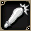
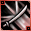
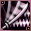
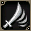
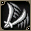
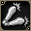
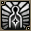

關於技能・魔法
共通攻擊
- 呼籲
固定傷害1的遠距離攻擊。實質上只用來吸引目標。命中率似乎固定在7～8成？
射程是整個畫面內，但部分怪物要接近到3格左右才能被鎖定為目標。
在一般守護動物培育的初期，那種怎麼樣都會把小烏鵝打死的角色使用的話，
也有可以有效率地培育守護的用法。 
銳擊
只要命中對象，就能強制讓其後退3格。
但是對部分怪物或高等級怪物無效。
對有效的對手可以用來強制把後排被鎖定的目標拉開。
比較特別的用法是，把難以拉的敵人強行彈向陣營方向，
強制把牠帶過來（依敵人不同可能會變成MPK，請注意！）。
在對人戰中，要把對手從攻城的王座或第3次戰爭占領地點排除時很活躍。 戰吼
戰吼
2012/02/29更新追加的新技能。
同時攻擊以玩家為中心周圍2格的大範圍技。
擁有較高的威力與最多20格的範圍傷害，但斧不會變成3倍。
在技能效果範圍內全部都以與玩家相同的朝向來判定。
(例如面向同一方向的話，不管敵人在背後還是並排在側邊，都算背面)
有一定機率讓對手陷入暈眩狀態，效果中即使再次攻擊也不會解除。
雖然有15秒的長延遲，但從緊急時吸引目標到提升殲滅效率，用途很廣。- 挑釁
說明文字容易混淆，實際上是沒有傷害的必中挑撥。
一發就能確實吸引目標，但等待時間要30秒，所以不好抓使用時機。
有個連招是後排被大量敵人鎖定陷入危機時使用→請聖職者以自己為目標施放聖的天啟，
或者在嘗試拉怪後丟棄時等緊急時刻，使用的機會應該會比較多。 
弗蘭吉威力攻擊
進入德爾克雷比斯後可以習得的技能之一。
斧使用時最強的單體攻擊技能。
消耗170，比至今的技能高出一個數量級，但威力也相稱。
推測延遲為2，無法單靠這個技能連續使用。
從名稱弗蘭吉(汎用)可知，除了劍・斧之外徒手也能使用。
雙手斧的話會變成致命3倍擊，Lv1互相比較的話傷害比WDA高出約1000。
劍戰士會拿來換掉二輪新月斬，斧戰士會拿來換掉雙重擊破吧。
因為SP消耗高，氣力累積的時間會劇烈縮短。→可以更頻繁使用現身等的好處
弗蘭吉多重威力攻擊
進入德爾克雷比斯後可以習得的技能之一。
威力在戰士的範圍攻擊中是最高等級，但發動前非常慢所以不好用。
劍專用
 斬擊
斬擊
最先能學會的劍技能。趕快練到SLv10(Lv20)，去學新月斬吧。
學會新月斬之後，只要度過SP很少的最初期，就沒有使用的機會了。
月光斬
只要使用混合藥水，光靠這個技能就能連招的技能。
不過威力很低。在學會二輪新月斬之前都要靠它。 火焰斬
火焰斬
有追加效果燃燒(以對象HP的數%傷害每2秒持續給予)的技能。
學會二輪新月斬和一字斬之後就會從先發名單退下，
但燃燒效果對部分首領級對手效果很好，所以到高等級後也要練起來。
燕返
劍戰士的主力技能。雖然沒有像烈焰斬那樣的追加效果，但攻擊力高所以很好用。
不過當然即使使用混藥，光靠這個也無法連招。
要混著烈焰斬或一字斬等一起使用。
如果有人幫你施放戰歌，也可以單獨連打。 居合斬
居合斬
正面與其左右共3格的範圍技能。高威力但消耗SP也多。
因為是純粹的範圍技能，正面有3隻怪物的話，就會得到3隻份的技能EXP。
發動前有待機動作，動作有些怪癖。
3格範圍的中心是正面攻擊，但左右斜前方的2個方向算側面攻擊。- 力量軍刀
正面直線3格的範圍技能。優點是斧戰士沒有的遠距離攻擊。
因為是純粹的範圍技能，直線3格上有3隻怪物的話，就會得到3隻份的技能EXP。
從特效外觀來看沒有致命攻擊，但只要提高DEX,HIT,Slv，
就會發生取代致命攻擊的1倍～2倍範圍的傷害浮動。
這就是俗稱的解放傷害，但因為1倍～2倍是均等發生，
所以隨時發生解放傷害時的平均輸出，是沒有解放（非致命）時的1.5倍。
在劍專用技能中擁有最高的攻擊力，但因為上述特性而不太容易理解。
技能發動前有待機動作，而且連續使用等待時間為2秒，所以以連招使用為前提。
另外，這是必中技能。不管對手的DEX,AAR多高都會狠狠命中。 - 致命斬
善惡等級91可習得的劍技能。
在劍單體技能中，擁有超過弗蘭吉威力攻擊的威力。
雖然有追加效果，但發動率非常低（應該說我沒看過發動），所以不要期待。
話雖如此，威力已經足夠，所以也可以取代弗蘭吉威力攻擊來使用。
斧專用
 打擊
打擊
最先能學會的斧技能。比劍技能「刺擊」更早習得。
在學會鎚擊之前就用這個吧。和刺擊一樣，學會後就沒用了。 重錘打擊
重錘打擊
比起把重擊練到SLv10，用等級制學會比較快。
只要使用混合藥水，光靠這個就能連招，非常輕鬆的技能。
相當於劍戰的新月斬的位置。到雙重擊破之前都要靠它。 強力打擊
強力打擊
有追加效果AC上升(對象AC+20)的絕佳技能。
技能本身的威力很低。追加效果發生時敵人會變成紅紫色。
對AC、HP高的對手，先用這個在第一擊降低AC，再使用DS與WDA的連招。
不過和烈焰斬不同，只要有施放詛咒的魔術師在就變得不需要，是個悲傷的技能。
※但是會與魔術師100以上魔法的詛咒創世重疊
即使是劍戰，單人時為了追加效果也可以用單手斧使破裂斬→換劍再接劍技能，
這樣連起來也是一種做法。
雙重打擊
斧戰士的主力技能。威力比破裂斬高，但沒有追加效果。
雖然叫做雙重，但並不是攻擊兩次，所以是1HIT。
雙手斧的情況下會成為和WDA連招的候選，所以要練起來。 戰士雙重攻擊
戰士雙重攻擊
斧戰士的主力技能。威力比雙重擊破高，是斧專用3倍傷害系中最強的招式。
其獨特的攻擊動作繪製幀數很少，莫名地卡卡的。
順帶一提這個看起來也像攻擊兩次，但並不會出現兩次傷害。- 戰士強力攻擊
攻擊正面1格及其周圍7格。擁有與騎士的毀滅爆波斬相同的攻擊範圍與特性。
攻擊力與消耗SP都比劍的一字斬高。
正面沒有敵人就不會發動，不管其周圍有幾隻怪物，得到的技能EXP都只有1隻份。
而且發動前有待機動作，不習慣的話有點不好用。
不過作為範圍攻擊擁有最高等級的威力，在MC1等地方要橫掃成群湧出的敵人時很好用。
只有這個技能用雙手斧傷害不會變3倍，
所以單手斧戰以WDA→WPA為主力比WDA→DS好。
以雙手斧為主的話，掃蕩雜兵的數量也很方便，所以練起來吧。 - 重型打擊
善惡91等級可習得的範圍斧攻擊技能。
同時攻擊正面3方向與左右2方向，技能經驗值也會獲得5格份。
和威力攻擊不同，發動前不需要蓄力所以很好用。
不過正面以外的傷害會減半。
和威力攻擊一樣，即使出現致命攻擊也不是3倍而是2倍傷害。
自我輔助
- 血之憤怒
自己的DAM+10，但會受到HP-5％/秒的毒效果。
不過，每素CON20，HP減少值會減輕1％。
可用中毒治療藥水解除。另外裝備毒防禦手套的話會被防住，要注意。
因為是「附帶DAM上升的毒」，所以與所有DAM輔助重疊。
不過一用HP就狂掉，完全不能在狩獵場使用。
目前大概是狂戰士之怒發動專用吧。
不過，在無論如何都需要火力時可以補上最後一擊，
所以和赫爾西恩討伐或火龍討伐等，PT與大型怪戰鬥時應該毫不客氣地使用。  氣盾
氣盾
自己的AAR+30。
只要DEX有好好提高，光用這個就能大幅提升閃避、減少被致命攻擊。
不過不會與吟遊詩人的護封之歌、騎士的騎士之譽重疊。
是王者之風的完全下位互換，所以到Lv65就沒用了。
沒有吟遊詩人時就用吧。 見切
見切
不會與吟遊詩人的護封之歌、騎士的騎士之譽、聖職者的魔法護盾群組重疊。
SAR比王者之風高15，但戰士提高SAR也感受不到什麼效果，
再考慮到與防衛之盾一起佔用2個SC欄位的缺點，果然到Lv65就沒用了。 氣斬
氣斬
自己的DAM+7、HIT+30。
因為與其他職業的攻擊輔助全部重疊，非常好用。學會這個可說是初期成長的一個關卡。
因為HIT+30很大，不容易出致命攻擊的STR型戰士，單人時也會使用。
學會力量集中之後，PT有吟遊詩人或騎士時也還是要靠它。 勇者之魂
勇者之魂
自己的AAR+35、SAR+25。不會與防衛之盾、閃躲、吟遊詩人的護封之歌、騎士的騎士之譽重疊。
可以用和修道士的反射閃避類似的感覺使用。
上述之中效果低的騎士之譽可以被它抵消，所以沒有吟遊詩人的PT就積極使用吧。- 戰士之盾
自己的AC-20。與其他職業的輔助全部重疊。對雙手斧戰特別感激的技能。
AC bug也修正了，所以戰鬥中要隨時不間斷地保持。 - 最後的抵抗
2012/02/29更新追加的新技能。
戰士唯一的魔法。延遲長達10分鐘，效果時間約30秒，但效果驚人。
PT快要崩潰時、單人時的緊急情況下使用吧。
另外，在接受效果時間長的HP上升魔法（聖職者祝福、GM的祝福等）之前使用這個魔法，可以多享受HP上升魔法的好處。
與說明不同，HP只要少1就能使用，但如果沒剩下消耗的MP100就無法發動，所以與心靈獵手的相性非常差。那種情況下把裝備脫下再穿上，製造出HP減少的狀態即可。  戰士之殼
戰士之殼
自己的MC-40。和坦克之甲一樣與其他職業輔助重疊。
明明是戰士為什麼魔法抗性這麼高！會讓人忍不住這麼說的技能。
在遠距離攻擊激烈的狩獵場非常有用。- 狂戰士之怒
只有HP50%以下時才能發動。
效果是移動速度+35%與延遲減少(與戰歌同效果)。
使用這個後，會成為全職業最快的移動速度。
不過，使用混合藥水或速度藥水時無法使用。
平常狩獵幾乎沒有使用的機會，所以與憤怒成套，實質上是城鎮內移動專用。 - 戰鬥吶喊
自己的最大HP/SP+10％。
不會與聖職者的救援術系列重疊。
不知為何優先度比救援術高。
會與騎士之耀重疊。沒有聖職者時就用吧。 - 力量集中
自己的DAM+25、HIT+10。
高等級戰士的火力來源。
不會與吟遊詩人的補給之歌、騎士的騎士之略重疊，
但會與聖職者的渴望之紋重疊。這是戰士與聖職者相性好的原因之一。
多虧有它，也有不少戰士犧牲STR，極端堆DEX。
只有在有吟遊詩人的PT時，會被補給之歌抵消，所以切換成集中攻擊吧。 - 戰士援助
自己的最大HP/SP+15％。
要當成只有15％，還是有15％呢。
不知為何優先度比戰吼低，
但性能是上位版，所以學會後就換成這個吧。
果然也不會與聖職者的救援術系列重疊。
這個也是沒有聖職者時就用吧。 
心靈獵手
效果時間內，原本應該由HP承受的傷害改由MP代替承受。
學會這個技能後，原本無用武之地的MP終於有了用途。
對上格亨納6、懺悔4等會使用艾克斯塔的敵人時，使用這個
也可以硬幹單人（前提是角色火力足夠）。
搭配這個與血之憤怒+狂戰士之怒就能變成蟑○。
心靈獵手快要結束時，立刻脫離戰線！ 靈魂之眼
靈魂之眼
進入德爾克雷比斯後可以習得的輔助技能之一。
自己的DAM/HIT+8％。
以習得條件、消耗SP的性價比來說效果偏薄，
但可以與集中攻擊或力量集中重複。- 戰士之舞
進入德爾克雷比斯後可以習得的輔助技能之一。
自己的AAR/SAR+10％。
和靈魂之眼一樣，可以與王者之風重複。 - 戰士的榮耀
進入德爾克雷比斯後可以習得的輔助技能之一。
自己的ADD+10。
天上相關
- 衝鋒突擊[善]／衝鋒突擊[惡]
對周圍3格以內的對象使用，會以超高速衝到目標的位置。(畫面不會變暗)
雖然會產生傷害但沒有威力，用作移動技能。
在與後排分開的地方戰鬥，後排被鎖定時使用，前去把目標拉開
這種用法很有效。能以比挑撥等邊跑邊打更快的速度接敵。
僅限部分地點，也可以越過障礙物。(例：MC的城牆上→與其說是越過，
不如說是可以爬上爬下城牆比較正確)
↑據說以前可以，但現在不行了。
現狀因位置bug的影響，有時會陷進敵人裡面，比以前更不好用。
有銳擊→衝鋒突擊等連招。 - 心靈戰士[善]／[惡]
代替他人承受傷害。
能代替承受的只有近戰攻擊（對遠距離或毒傷害等無效，嚴禁過度相信）。
除了單純保護弱的角色之外，也可以用來檢查有沒有被打。
常對後排(尤其是聖職者)使用(因為即使自己死了，只要聖職者平安就能治療、復活)。
對AC高(防禦力低)的人使用，反而是自己會有危險。
建議與神祕支援守護或心靈獵手併用。
沒有聖職者、有吟遊詩人的移動PT，請吟遊詩人對你施放增幅治療即可。 - 絕對之怒[善]／極限之怒[惡]
約20秒內，所有攻擊技能的命中率變成100%的輔助技能。
對命中率差的斧戰士來說相性絕佳，劍戰士也可以正常使用。
雖然是非常強力的技能，但對原本就有命中率100%的力量劍的劍戰士來說，恩惠似乎有點薄。
命中率變成100%，但致命率也會變成固定，所以不可對會全部出致命的對手使用。
這個技能+銳擊在對人戰中發揮凶惡的性能。
技能鍛鍊與連招指南
首先請熟讀基礎知識，記住基本的事。
劍戰士
- 學會刺擊(Lv5)
刺擊→攻擊。
初期技能到中期就不會再用了，所以不用在意SLv。趕快提升Lv吧。 - 學會新月斬(刺擊SLv10 or Lv20)
新月斬連打。
不過剛學會時消耗很大，所以直接使用刺擊也可以。
SLv55會學會二輪新月斬，但只要正常狩獵，新月斬到SLv55之前
一定會先到達Lv60，所以沒有必要鍛鍊。 - 學會烈焰斬(新月斬SLv30 or Lv40)
新月斬→烈焰斬。
雖然稍微困難一點，新月→烈焰→烈焰→新月→烈焰的重複也能連得起來。
烈焰斬的追加效果燃燒，對之後要打的超高HP首領非常有效，所以好好鍛鍊吧。 - 學會二輪新月斬(新月斬SLv55 or Lv60)
二輪新月斬→烈焰斬。
與前項相同，烈焰→二輪→二輪→烈焰→二輪的重複可以連起來。
戰歌效果中，只用二輪新月斬就能連招。
等級制一字斬的習得條件是Lv86，所以在二輪新月斬SLv50時學吧。
到SLv55為止可以輕鬆上升，所以一字斬在Lv79左右之前學會吧。 - 學會一字斬(二輪新月斬SLv50 or Lv86)
一字斬→二輪新月斬。
一字斬→二輪新月斬→烈焰斬。
一字斬→二輪新月斬→二輪新月斬。
一字斬有發動動作，所以與至今的連接方式不同。
從這附近開始練習用空白鍵取消攻擊(待機動作的攻擊取消)吧。
不論夾不夾攻擊所需時間都一樣，所以夾攻擊的話總傷害會稍微高一點。
嫌麻煩的話，用最上面的連招也可以。只是連接比較慢。 - 學會力量劍(Lv91)
力量劍→一字斬→二輪新月斬。
力量劍→一字斬→二輪新月斬→烈焰斬。
力量劍也有發動動作，而且到下次能發動為止的等待時間長達2秒，
所以連招變得困難。
首先，二輪新月斬→烈焰斬，出現燃燒效果後只要第1個連招就夠了。
一味追求傷害的話是力量劍→攻擊→二輪新月斬→一字斬→攻擊→二輪新月斬。
雖然多了攻擊的份傷害略微提升，但操作會變得非常複雜。 - 學會弗蘭吉威力攻擊(Lv110)
力量劍→一字斬→弗蘭吉威力攻擊。
斧戰士
破裂斬追加效果的發生率，根據阿斯嘉德提問留言板的某位人士所說，
| SLv | 發生率 |
| 10 | 5% |
| 40 | 25% |
| 50 | 30% |
| 60 | 40% |
差不多是這樣。
- 學會重擊(Lv3)
重擊→攻擊。
Lv10會換成鎚擊，所以幾乎不需要鍛鍊重擊。 - 學會鎚擊(重擊SLv10 or Lv10)
鎚擊→重擊。
初期的主力，但只用到Lv50。果然也不需要鍛鍊。 - 學會破裂斬(重擊SLv30 or Lv30)
破裂斬→鎚擊。
破裂斬是斧戰士唯一的附魔異常狀態的招式。發動機率取決於SLv。
AC+20不容小覷，所以高等級也很活躍。好好鍛鍊吧。 - 學會雙重擊破(鎚擊SLv40 or Lv50)
雙重擊破→破裂斬。
現狀，這個雙重擊破與忿怒之擊的連招火力最高。 - 學會忿怒之擊(雙重擊破SLv40 or Lv70)
忿怒之擊→破裂斬。
忿怒之擊→雙重擊破。
用前者附魔AC+20效果後，若能切換成後者就理想了。
集中鍛鍊其中一個技能的話，維持原樣也可以。 - 學會威力攻擊(破裂斬SLv40 or Lv85)
威力攻擊→忿怒之擊。
威力攻擊→忿怒之擊→雙重擊破。
威力攻擊有發動動作，所以與至今的連接方式不同。
有餘裕的話，在待機動作中用空白鍵加入攻擊取消吧。
嫌麻煩的話，用最上面的連招也可以。只是連接比較慢。 - 學會弗蘭吉威力攻擊(Lv110)
威力攻擊→弗蘭吉威力攻擊→忿怒之擊。